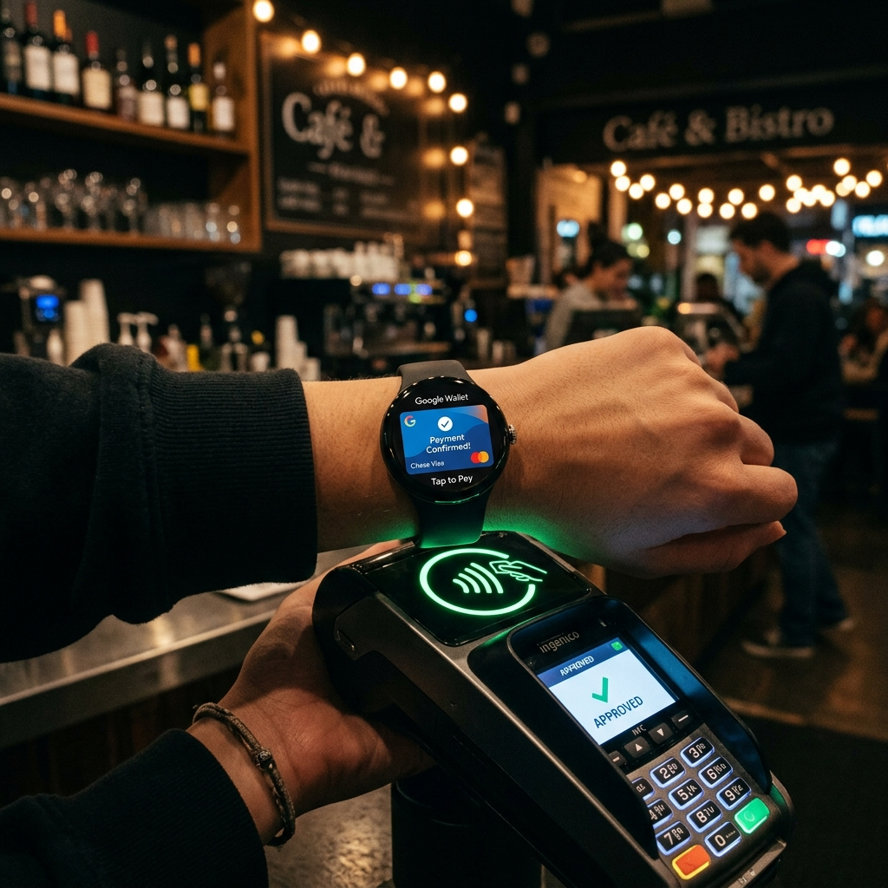

One of the greatest conveniences of owning a modern smartwatch is leaving your bulky wallet at home. Whether you are going for a run, grabbing a morning coffee, or boarding public transit, making a quick payment with your wrist feels futuristic and efficient. Google Wallet (formerly Google Pay) on Wear OS allows you to conduct fast, secure, contactless Near Field Communication (NFC) transactions at millions of terminals worldwide.
In this guide, we will walk you through setting up a screen lock (a safety requirement), adding payment cards, and executing secure checkouts using Google Wallet on your Wear OS device.

Prerequisites: What You Need to Start

Before proceeding, ensure your devices meet these minimum criteria:
- A smartwatch running Wear OS 2 or higher (such as Google Pixel Watch, Samsung Galaxy Watch 4 or newer, or TicWatch).
- Built-in NFC hardware enabled on your watch settings.
- A paired smartphone with the latest Google Wallet and watch companion apps.
- A bank or credit card provider that supports Google Wallet transactions.
Step 1: Set Up a Secure Lock Screen on Your Watch
For security reasons, Google Wallet will not function unless you establish a lock screen (PIN or Pattern) on your smartwatch. This prevents unauthorized individuals from utilizing your payment cards if your watch is lost or stolen.
- Open your watch's Settings app.
- Scroll down and select Security > Lock type (or Screen lock).
- Choose between PIN or Pattern, and set your secure password.
Smart Lock behavior
Don't worry—you don't have to enter this code every time you look at the watch. The sensors detect when the watch is on your wrist. You only have to enter the code once when you put the watch on. If the watch detects it has been removed from your wrist, it locks immediately.
Step 2: Install and Open Google Wallet on Wear OS
While Google Wallet is pre-installed on many Wear OS watches, you may need to download or update it via the Play Store:
- Open the Play Store app on your watch.
- Search for "Google Wallet".
- Select the app and tap Update or Install.
- Once installed, launch the app from your app drawer.
Step 3: Add Cards via Your Phone
To register a new payment card, you will configure details on your phone's screen for comfort and security:
- Open Google Wallet on your watch and tap the "+" (Add card) icon.
- A prompt will appear directing you to continue on your phone. Unlock your phone.
- The Google Wallet setup wizard will launch automatically. Tap Add to watch.
- You can select an existing card already linked to your Google Account or select New credit or debit card to capture card details with your phone's camera.
- Verify the card's security code, and read and accept the bank's Terms of Service.
- Complete the identity verification step (typically via an SMS code, email code, or bank app check).
- Once verified, the card will sync to your watch.
How to Make Contactless NFC Payments
Paying with your watch is incredibly fast. When you are standing at a checkout counter with an active payment terminal:
| Action Step | How to Perform | Feedback Indicator |
|---|---|---|
| 1. Launch App | Double-click your watch's physical Home or side button (standard shortcut). | Your primary card displays on the watch face. |
| 2. Hold Near Terminal | Place the top half of your watch face near the contactless reader. | Wait for a brief vibration. |
| 3. Transaction Done | Keep the watch still until a confirmation appears. | A blue checkmark and a chime indicate success. |
Security and Privacy Measures
Google Wallet utilizes virtual account numbers (tokenization) to protect your transaction history and card details. When you hold your watch to a terminal, the system transmits an encrypted token rather than your actual credit card number. This ensures your financial information remains private and secure.
Conclusion
Setting up Google Wallet on Wear OS is a simple process that yields massive daily convenience. By establishing a screen lock, linking your credit cards, and mastering the double-press shortcut, you can handle checkouts in seconds. Leave your heavy wallet behind and enjoy the convenience of NFC payments on your wrist!